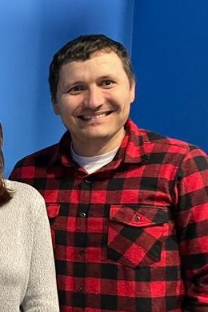
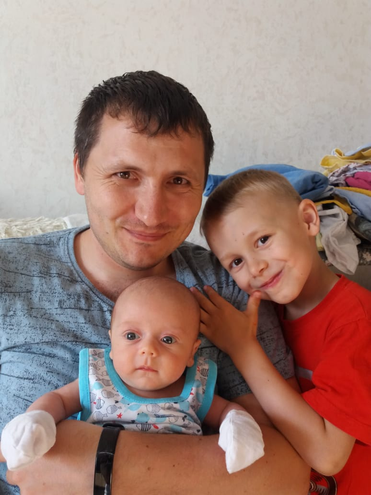

Андрей Михайлович Юрков (24.11.1985)
На др Дениса (фрагмент)
Родился: 24.11.1985, Волгодонск
Возраст: 39
Отец: Михаил Елизарович Юрков (01.02.1962)
Мать: Татьяна Анатольевна Юркова (Ферисова) (08.12.1961)
Сестра: Ирина Михайловна Соловьёва (Юркова) (30.11.1987)
Жена: Анна Александровна Юркова (Ковалёва) (Предположительно 26.08.1987)
Сын: Александр Андреевич Юрков (29.05.2014)
Сын: Михаил Андреевич Юрков (16.04.2020)
 На др Дениса: 02.03.2022. На др Дениса: 02.03.2022. : до 01.10.2025. |